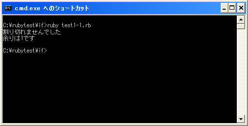

if文
プログラムは記述した順に実行されていきます。ただある条件によって処理を分けたい場合もあります。例えば変数の値が正の数ならこちらの処理を行い負の数ならこちらの処理を行うといった場合です。
このように条件に従って処理を分岐させるための使われるのが「if」文です。「if」文の書式は次のようになっています。
if 条件式 then 条件式が真の時に実行する処理1 条件式が真の時に実行する処理2 end
条件式にはその後に記述された処理を行う条件を記述します。条件には例えば「変数が参照する数値が正の数だったら」とか「変数が参照する文字列がxxxと等しかったら」などの条件を記述します。(条件式の記述方法は関係演算子のページを参照して下さい)。
条件に当てはまっている場合は、「then」から「end」までの間に書かれた処理を上から順に実行します。条件に当てはまらなかった場合は「end」の次の行へ処理が移ります。このように「if」文を使用することで、条件当てはまった場合だけ処理を実行するといったことが可能になります。
次の例ではif文の条件式として変数に代入された数値の値を「0」と比較しています。
amari = 10 % 3
if amari != 0 then
print("割り切れませんでした¥n")
print("余りは", amari, "です¥n")
end
変数に代入された数値が「0」でない場合に「then」から「end」までの処理が実行されます。
なおif文では条件式の後に改行がある場合は「then」を省略することが可能です。
if 条件式 条件式が真の時に実行する処理1 条件式が真の時に実行する処理2 end
「then」を省略してもしなくても構いませんが、今後のサンプルでは「then」は記述していきます。
サンプルプログラム
では簡単なプログラムで確認して見ます。
#! ruby -Ku
require "kconv"
amari = 10 % 3
if amari != 0 then
print(Kconv.tosjis("割り切れませんでした¥n"))
print(Kconv.tosjis("余りは"), amari, Kconv.tosjis("です¥n"))
end
上記のプログラムを「test1-1.rb」として保存します。文字コードはUTF-8です。そして下記のように実行して下さい。

( Written by Tatsuo Ikura )

著者 / TATSUO IKURA
初心者～中級者の方を対象としたプログラミング方法や開発環境の構築の解説を行うサイトの運営を行っています。